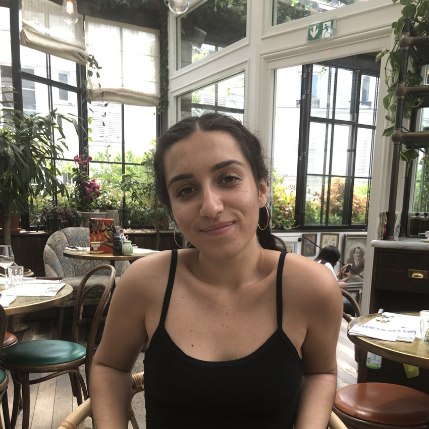

ABOUT ME
I am a UX designer and artist from Los Angeles - fascinated in the way we interact with design, color, and the space that surrounds us. For me, Human Centered Design and Engineering (HCDE) is the way that visual, virtual, and physical design intersects and interacts with people, different communities, and users. I want to be able to use my design skills to bring effective and needed change to underserved and underrepresented communities and demographics.
email: gbarar@uw.edu
phone: 323.719.1998
Before attending college, I did not have exposure to or knowledge of computer science,
information technology, or any of the foundational aspects of the tech industry. Because of this
lack of experience, I had to search deeper, and push myself harder to connect what I was
learning in school to my own personal identity and lived experience. I often felt that I did not
belong to my major, Human Centered Design and Engineering, or to any specific academic
community.
In spring quarter of my second year at UW, I enrolled in a DXARTS class. Even though it was
outside of my major and would not fill any specific requirements that I need to graduate, I
enrolled simply because the topic was of interest to me and I was seeking an opportunity to
explore and learn. This class was called E-textiles & Wearables for Art & Design and was taught
by Afroditi Psarra. I immediately connected with both the subject matter and the people. This
transformative class helped me feel like I belonged; I was in a space where learning to code and
use technology became creative and collaborative instead of competitive. I spent hours in the
studio after class working on both my designs and my code, not out of necessity but out of a
determination and excitement to learn. Through hands-on experience this class taught me how
to code through the use of soft circuits and e-textiles. This class taught me not only how to
make computer science and language applicable to myself and my experiences but reaffirmed a
core belief of mine that every individual has a different learning style that is unique to
themselves; I found that I learn best through making, creating, and using my hands. Whether it
be a personal art project, engaging in activism in my community, building circuits out of
unconventional materials, or creating an interactive device to help encourage design
awareness, I began to feel deeply connected to my work both academically and personally. This
class was a catalyst for me in building both my academic and creative confidence.
After finishing this class I found several new directions to explore the intersection of politics,
design, and technology. With several of my peers, I organized and participated in an E-textiles
fashion show in Pioneer Square. I have also become the lead graphic designer for UW
Sustainability, where our designs promote many campus-wide environmental events throughout
the year.
More recently, I joined a research group with a small number of other HCDE students to explore
and promote design awareness. As advocates for design, we work to understand the design
process and how we can better integrate design awareness into our own creative processes as
well as supporting the growth of others. Through this group I am now a co-author of the
technical report - What the Hell is Water? Exploring Connections between Design Process,
Design Doing, and Design Awareness. In addition, I am also currently working on a web
application to help users track and become more conscious of their own design processes. This
research group has been crucial in establishing a direct connection between what I am studying
in my classes and my creative projects outside of academia. But perhaps even more
importantly, my research group has connected me to other students in my major and has given
me a true sense of community and belonging.
The DXARTS class has also prompted me to become more involved in creative endeavors
outside of my academic experience. I recently created a short film with a friend that playfully
explored the city that we live in and the people that surround us. I have also begun a small
online business making laser cut acrylic jewelry a by-product skill I acquired through may
hours of trial and error at the E-textiles studio.
This past quarter, I enrolled in another class that required the understanding and application of
other computer programming languages, specifically Python and HTML (HCDE 310). Despite
my difficulty in CSE 142, the previous spring, I have grown to understand coding's relevance to
my goals its relevance in our society. I want to be taken seriously in the workplace, engage in
the exchange of ideas, and have the opportunity to create meaningful change. I know that as a
queer mixed-race woman, it is imperative to my personal success that I have command of
creative coding and creative technologies in order to best prepare and empower myself to
actualize my ideas.
Although I may not be as adept in my coding abilities as I would like, I used this recent class
experience in HCDE 310 as a way to push myself beyond what I thought I was capable. I
tapped into my recently found technical confidence. I realized that if I want to inspire change, I
first need to be an inspiration to myself. I need to continue to surprise myself and push myself. I
took this class as an opportunity to use academic knowledge and what I am learning in the
classroom to pursue the things that I am passionate about.
For my HCDE 310 final project I created a web application that combines topics and keywords
from the NYT's article of the day with the Metropolitan Art Museum (MET) gallery and art
collection. My intent with this project was to create a more accessible and digestible way for
users to access art while simultaneously connecting art to real world issues. I not only created
the NYT x MET web application, but used my interest in animation and video art to create a
video that displayed the application's functions and highlighted its features. I surprised myself
with what I was capable of coding and finished the quarter with a final project that I was really
proud of and empowered by. This experience reinforced the fact that I feel most fulfilled when I
am creating whether that be physically or digitally. Using my analytical skills, my drive to make,
and the design thinking strategies I have developed, I know that I will be able to inspire positive
change in my community.
Outside of my classes I continue to work as a graphic designer for UW Sustainability which
enables me to explore more aspects of design through the creation of print and digital media
surrounding critical issues of the environment and social resilience. In addition to my graphic
design work, my part-time job in a local coffee shop has taught me much about owning and
running a small business, interacting with customers and co-workers of many different
backgrounds, and what it means to be a leader in the community.
One day I hope to run a business of my own in order to engage directly with others and bring
positive change to the communities that have supported me. Regardless of my final destination,
I strive to create a space that is safe, inclusive, and supportive of anyone who needs it; a space
that inspires creativity whatever that may mean to an individual.